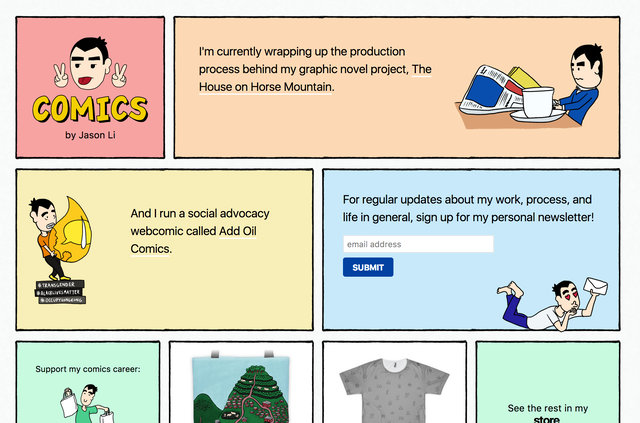
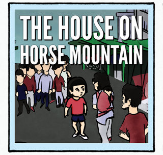
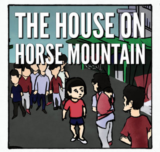
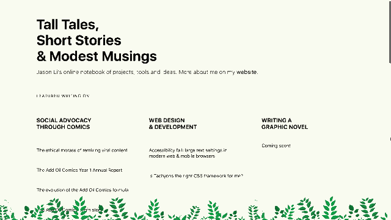

Design patterns for adding illustrations onto web pages. With CSS! A work in progress.
Version 0.02
border image
Hard, square edges on <div>s and boxes are boring – why not spruce up your layouts with some illustrated borders? Check out CSS Tricks' primer on the border-image CSS property.
Case study: hand-drawn black border
Example:Comics by Jason Li:

TL;DR – manual, trial-and-error fidgeting with border size values is required to create a rough, organic edge and allow control over the enclosed box.
Take this border image I made for my comics site (it has a transparent background):
Without fidgeting, if I applied these background and border-image properties:
background-color: #C8E9F9;
border-width: 1rem;
border-image-source: url('assets/BorderImage.png');
border-image-slice: 5% fill;
border-image-width: 1rem;
border-image-repeat: round;Then I'd get:

So I add a border-image-outset: 1rem; to push the border out:

But this leaves big white borders around the edges. I then fidget with the values – by trial and error – so the blue and the black line butt up against one another nicely, and my black line is a nice-looking width:
background-color: #C8E9F9;
border-width: 0.67rem;
border-image-source: url('assets/BorderImage.png');
border-image-slice: 4% 4.5% fill;
border-image-width: 0.67rem;
border-image-outset: 0.45rem 0.35rem;
border-image-repeat: round;
This works unless I need to stick in a photo to be fully-flush with the black border.

In that case, I manually adjust the border-image-outset till it crops right to the edge of the image (and kill the background color to eliminate minute stray edges):
background-color: inherit;
border-width: 0.67rem;
border-image-source: url('assets/BorderImage.png');
border-image-slice: 4% 4.5% fill;
border-image-width: 0.67rem;
border-image-outset: 0.45rem 0.35rem 0.2rem 0.4rem;
border-image-repeat: round;
If you look closely, you can see that the image eats into the border a little bit, but that's preferable to have a colored or white space between the two.
persistent ornamentation
Given that many users dislike large, clunky, persistent navigation bars, why not consider replacing it with some persistent ornamentation? As with persistent navigation, the trick is to make sure that it doesn't get in the way. I like to use non-square images with transparent "holes" – and to keep it small, especially on mobile.
Example: Tall Tales, Short Stories & Modest Musings – note the plants at the bottom:

Needless to say, if a website already has a persistent navigation bar, there probably isn't any room left for further ornamentation.
css properties
position: fixed;
width: 100%;
background-image: url("../image.ext");
background-position: bottom center;
background-repeat: repeat-x;
bottom: 0;N.B. height varies depending on the image and screen size.